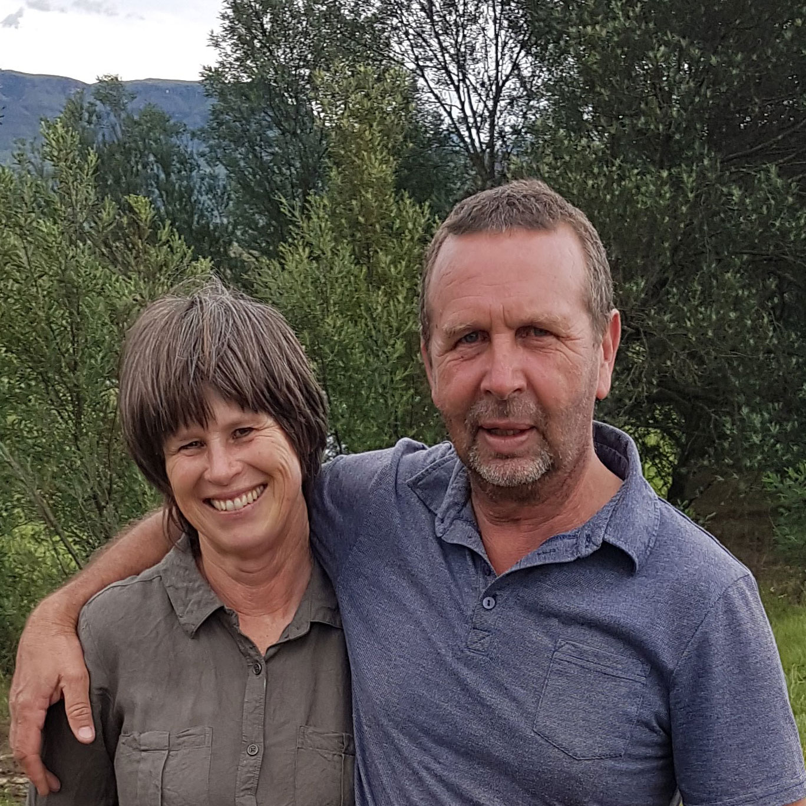

Come Stay with us. We are Off the Grid!
Nestled in the valley below the famous Sani Pass, Ripon Farm views the winding road up into Lesotho and on clear nights the Sani Top Chalet is visible on the skyline. The homestead is flanked by three generous self-catering cottages and a unique single-stand campsite, all situated on a north-facing slope with spectacular views of the Berg.
Ripon Country Cottage, Granny Smith Cottage, Nguni Cottage and Umthintshi Camp are available all year round for rent, and bookings can be made directly with the owners, Ed and Erika Smith.
While Ripon is a working farm, guests can walk freely amongst the Nguni herd (and stroke a tame calf) on the 187ha extent. Two farm dams with bass fishing are available and rods can be hired on site. The views of The Giants Cup and Sani Valley, within the uKhahlamba Maloti Drakensberg Park, are truly spectacular.
We can assist with booking of tours to Sani Pass as well as professional Birding Tours with an experienced guide. The Underberg area is an ideal Mountain Biking and Trail Running play ground, and guests have free access to the incredible Sani Spoors mountain bike trails. Visit their website for more information. Long quiet gravel district roads also provide ideal training roads for cyclists and runners. Himeville Museum is highly rated and a pleasant outing.
Rafting and Tubing is available in Underberg in season and Mountain biking is a year round activity. The uMzimkulu River offers paddlers clear and clean waters to enjoy.
Meet the Team
Erika and Ed Smith
Erika and Ed are your hosts and will assist with all queries. They have many years of shared experience as guesthouse hosts, and will ensure a superlative stay. Erika is fluent in German, Afrikaans and English.